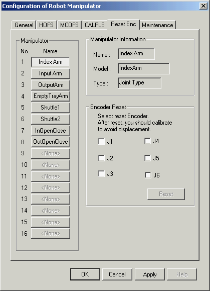
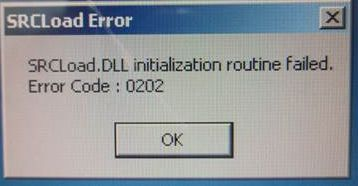

Service History
Subject: DU2 Axis 4 Motor Driver Module and AC/DC Board faulty
Handler Model: NS-8040 (NS80-98) S/N: 181208
Controller: RC520
Date: 16 Nov 2007
Warranty claim: S0267
Symptom
Drive Unit 2 (DU2) Axis 4 Motor Driver Module (servo driver) burnt and AC/DC board (Motor Power Unit) faulty.
Action
SPEL encountered “Absolute Encoder Backup Alarm” after burnt Motor Driver Module replaced, in SPEL, status for all robots in DU 2 with ??? .
Reset Encoder from SPEL
(In SPEL CT, click [Setup]->[Robot Manipulator]->[Reset Enc] tab.
Tick the Joint to initialize and click [Reset] button.)

Restore SPEL system files. Encountered “SRCLoad.DLL initialization routine failed Error code:0202” and “E-9202 SRCMng event resource allocation error” after restore system files.

MMI and SPEL unable to launch, perform recovery on HDD and restore files through backup san. Now all robots pulse 0 positions out.
Require manual calibration of all motors with reference with another handler.
After manual calibration, Teaching perform on Index Arm Y,Z and U axis of both arm 1 and 2 ref height of both index arms, contact position and both shuttles loading and unloading positions. Verified input/output arm open/close pitch and adjusted in SPEL hofs of robot 7 and 8.
Cause
Remarks
Refer procedure on NS-8040 Manual Calibration Of Motors.
400 W Motor Driver Module R13B070114
Use Recovery CD FD07S109 ver1.56 (12/11/2007) will also solve Encoder Backup Alarm error as the SPEL CT is 3.11ds is installed during recovery.
Refer 0007-NS8K
Refer NS-8040 Manual Calibration.
One same case of SRCLoad DLL, Initialization routine failed:
After 2 pieces of the Remote IO Boards were installed, the error was detected.
The error, 0202; "SRCLoad DLL, Initialization routine failed",
Error 9202; SRCMng event resource allocation error occurred.
After remove the extra Remote IO Board, no more error.
There was conflict when the 2 Remote IO boards were having same address.